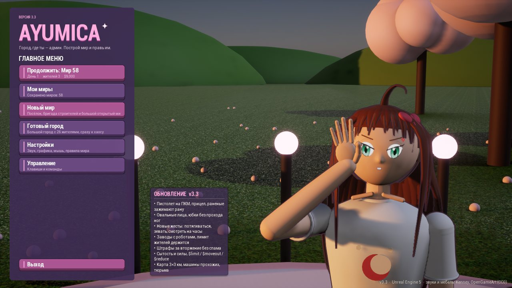
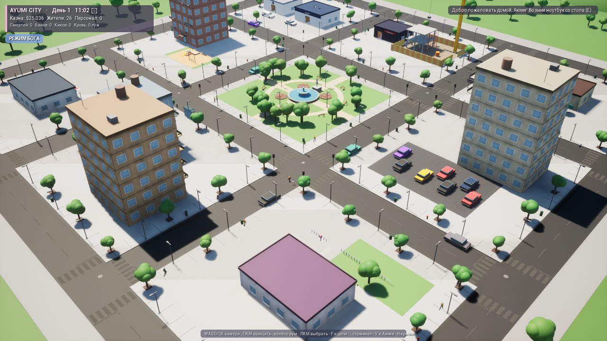
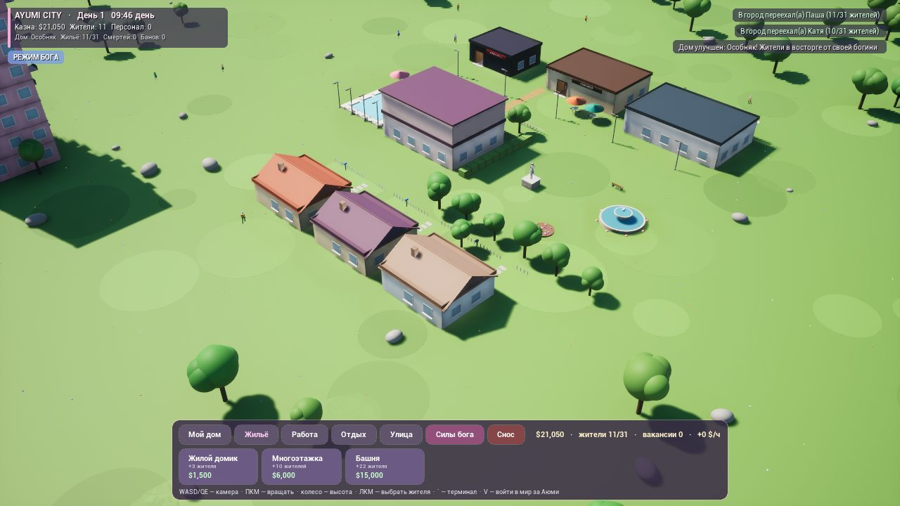
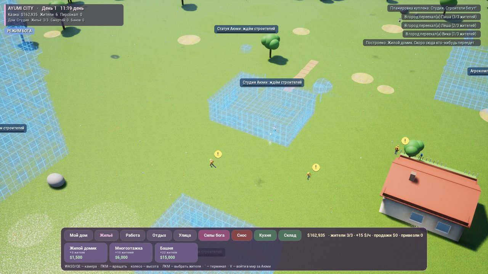
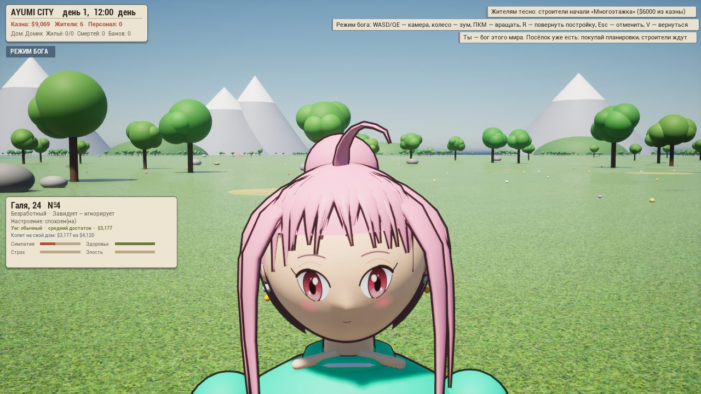
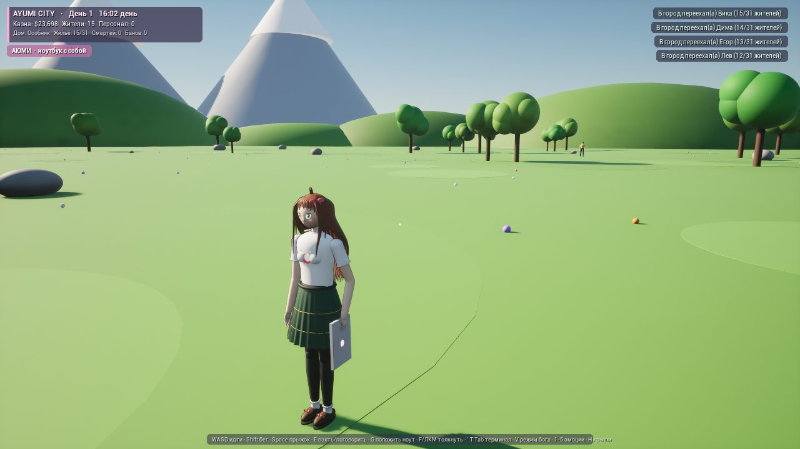

Город-песочница, где ты — Аюми, админ и разработчик города. Строй дома и школы, следи за сотнями жителей, лови преступников и правь миром с ноутбука через Ayumi OS.

Жители с семьями, работой, домами, машинами и друзьями. Город сам строит школы и многоэтажки.
Воры, грабители и поджигатели. Полиция гонится за ними и сажает в тюрьму, пожарные тушат дома.
Ноутбук с рабочим столом, файлами, терминалом и играми. Команды $ управляют всем городом.
Аюми (её знают все), Борис (его тоже узнают) и Тёма под прикрытием. Переключение F2/F3/F4.
Дети учатся днём, играют во дворе на переменах, взрослые ходят на вечерние курсы.
Метеориты, разрушаемые дома, погода, День города, автографы и фото с фанатами.





Кнопка «Скачать лаунчер» ведёт на страницу релиза. Там файл AyumiLauncher.exe.
Лаунчер скачает игру (~300 МБ), проверит контрольную сумму и распакует её. Ничего не устанавливается в систему.
Кнопка «Играть». Когда выйдет обновление, лаунчер сам предложит «Обновить», сохранения останутся.
| WASD, Shift | ходить, бегать |
| E | взять ноутбук, дать автограф, сесть в машину, купить |
| F / ЛКМ | толкнуть; в машине — гудок |
| ПКМ | выстрелить |
| 1–5 | жесты и эмоции |
| T / Tab / ` | Ayumi OS и терминал (нужен ноутбук) |
| V / F1 | режим бога (только у Аюми) |
| F2 / F3 / F4 | Аюми / Борис / Тёма |
| H | крыши |
| Esc | пауза |